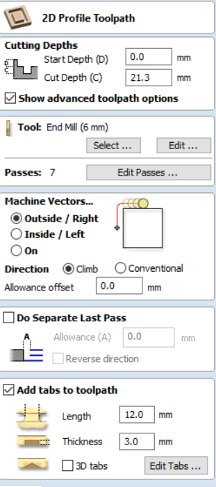

Final project
My contribution.
Maze
My role in this assignment was the designer of the maze. I used my previous experience from the other assignments that I did earlier in the course to help with the design of the maze. Designing the maze included nothing new that I did not know before because of my experience with fusion.
After we decided to make a maze it was my time to shine as the appointed designer. First of all I stared to make the base of the maze and it's dimensions were 1 x 1 meters.

After the base had been creaated I mede a new sketch on top of the base and make the outline of the maze, I researched diffrent type of maze but decided to let my creative thinking run its course


Now that the maze is ready I thought to myself that this was too simple so an idea popped into my head that it would add to the artistic feel to the maze to include a tag.

Now that the design waas ready it was time to prepare the file in Vcarve to make the process faster when we get into fablab. First of all I setup up the proper job setup for the milling process.
For the setting og the drill we had help from the staff in Fablab where they showed us how to set the right feeds and speetrs and also everything related to the geometry of the drill.
Now it was time to prepare the toolpaths for the milling process. Firstly I made a drilling toolpath that made 1 mm hole so that we could place screws on the wood to keep it in place, this was important for safety reasons.

Next up was to create a pocket toolpath that would serve to mill the inside of the maze and also for the tag.
Finally it was time to make 2D profle toolpathe that would cut out the outline of the maze. After this was done everything was ready and we milled the maze and we were happy with the outcome.

Mold
After the maze was done it was time to design the mold for casting. We decided to make a mold for a sphere to create a ball that could be used to play the maze. I first created the sphere wich would serve as the foundation of the mold. Then I created a box that surrounded the ball and used the combine feature to make a hollow sphere inside the box.
I created a midplane between the top and bottom of the box so I could use the split feature to cut the box in half


After the box had been I hid the top and created a small sphere on the corner of the bottom box and used the rectangular pattern featur to make 3 other spheres tha aligned in symetry on the other corners. Thi was made to make a supprt to the cast when it would be put together. After this was done I used the combine function to cut the top box so the newly made spheres would fitþ

A hole was needed so we could insert the fluid that would harden to create the sphere. This was easy because of the hole function in Fusion 360.

Next step was to align the top and bottom to be parallel to each other and after that create a box that would then be cut by the top and bottom box.
Now that the design is ready it was time to prepare the toolpaths in fusion 360 (because of Covid we decided to not make them in Vcarce and just use the simulation inside Fusion 360). To start I had to create a setup for the stock inide the manufacture panel in Fusion 360.
For the toolpath I used 3D adaptive clearing. Inside here I set up the necessary settings so that the milling would work and also edited the flat end mill. See pictures below for the settings.

Now everything is ready for the simulation, here below you can see a video that shows the simulation of the milling process which was made in Fusion 360.
Timetable
| name | Description | hour |
|---|---|---|
| Idea | Finding and deciding on an idea | 2 hours |
| Fusion 360 | Designing and working in Fusion 360 | 18 hours |
| Vcarve | adjusting and working in Vcarve | 2 hours |
| Milling | Start the milling and watch over the process | 4 hours |
| Total hours | 26 hours |
Search engine keywords
Fusion 360 Manufacture - preparing a mold in Fusion 360 - Vcarve prepare toolpaths for milling - Milling using Fusion 360 - Cool maze to make